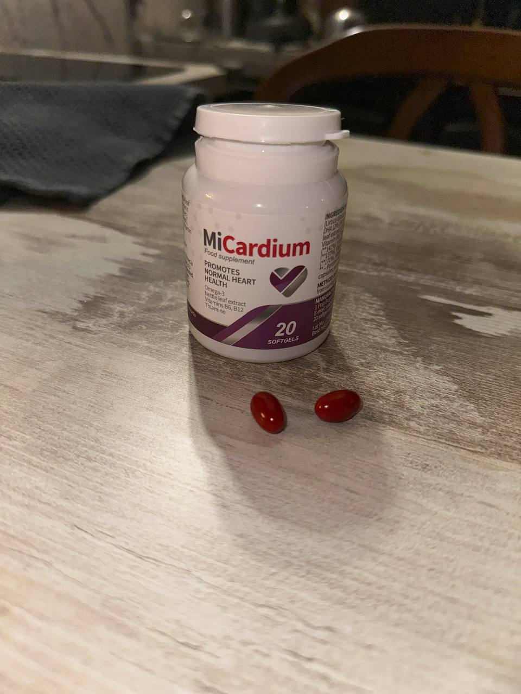
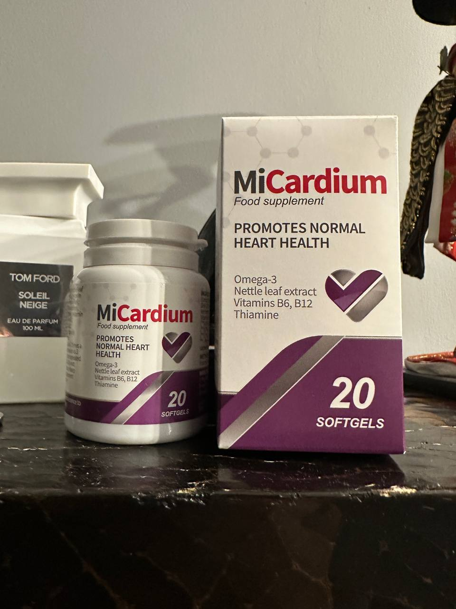
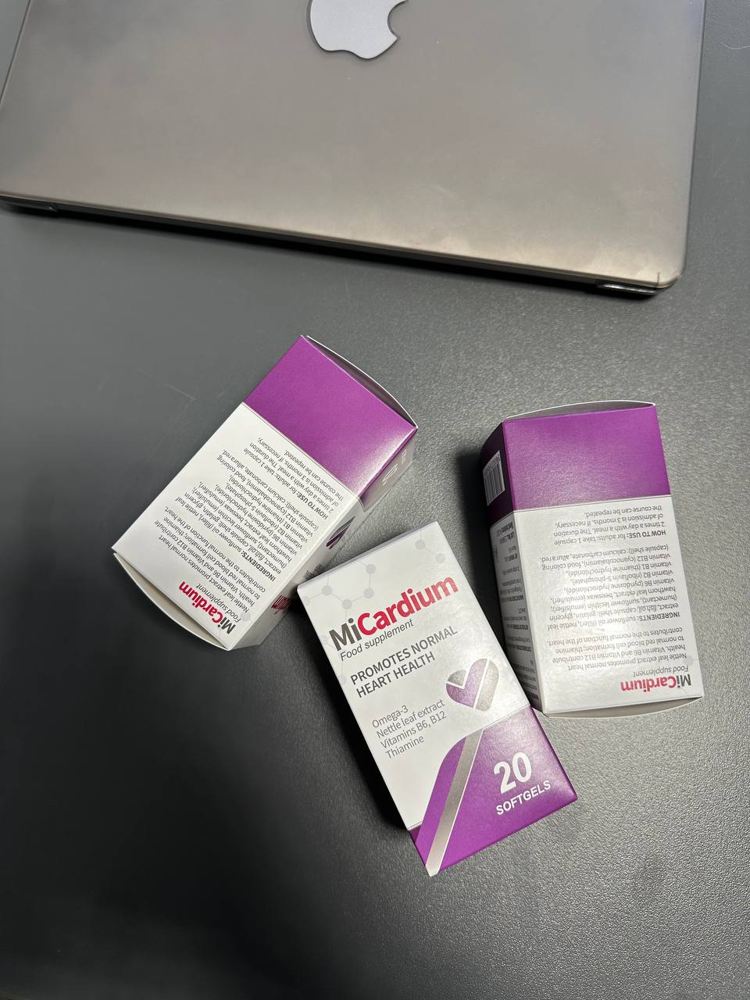
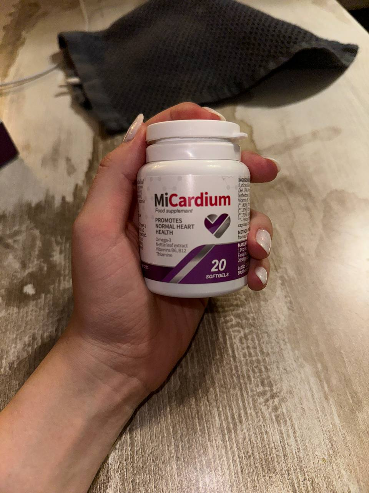
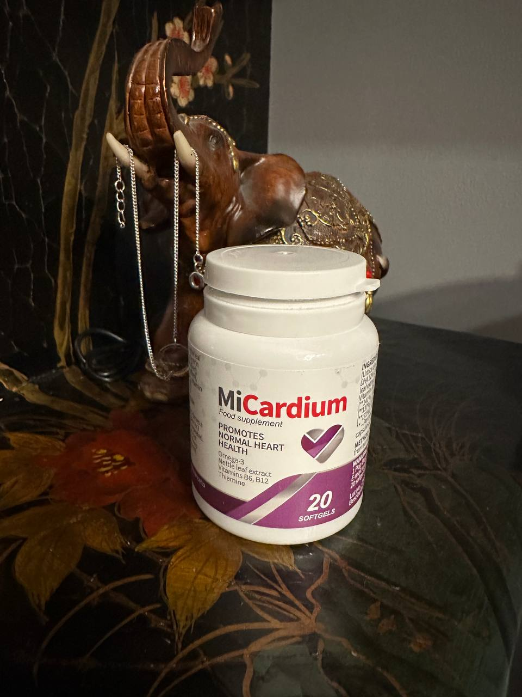
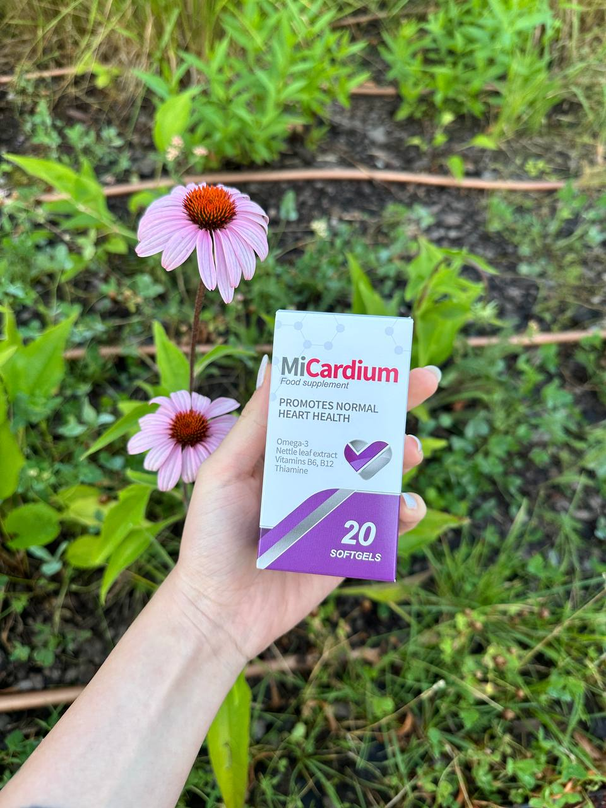
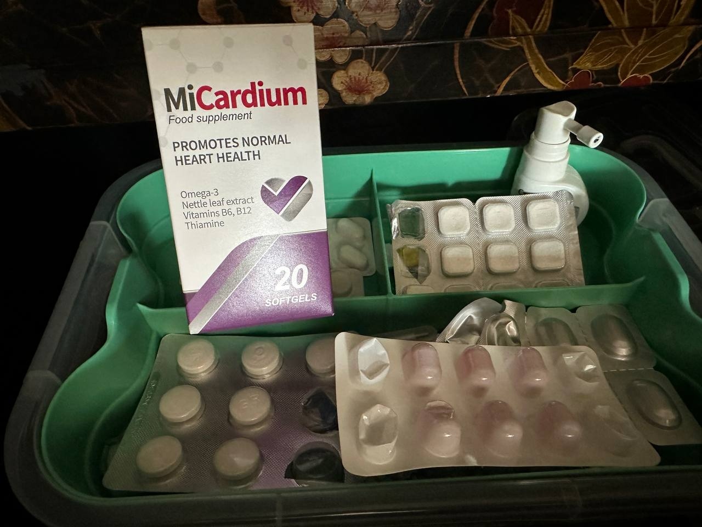
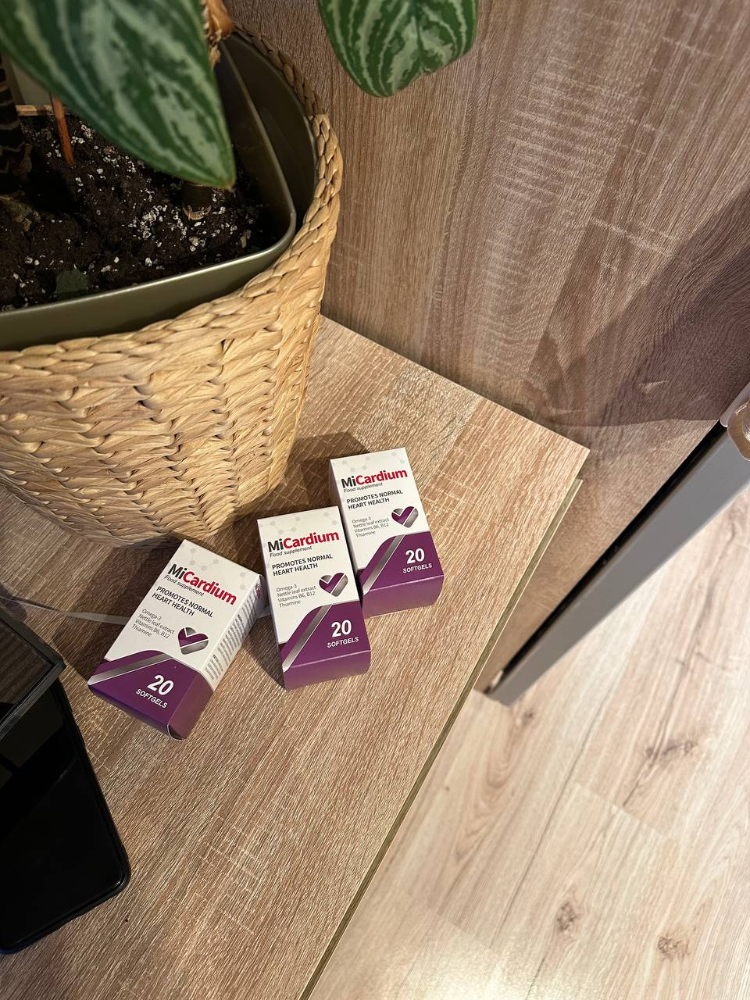

Възрастта не е фактор! 84-годишният кардиолог споделя тайната на дълголетието и отличното си здраве.
Известният български кардиолог Проф. д-р Младен Грънчаров се пенсионира на 70 - годишна възраст, въпреки това, той все още е с младо тяло и сърце. Пенсиониран е от 14 години и социалните служби го мразят. Сега професорът е на 84 години, но се чувства на 55.
Проф. Грънчаров уверява, че тайната на дълголетието се основава на кръвоносните съдове. Ако
те са чисти и здрави, можете да живеете до 110 години и дори по-дълго и да се чувствате напълно здрави.
Кардиологът напълно потвърди това твърдение.
Нашият репортер успя да интервюира проф. Грънчаров, който ни обясни метода си за почистване на
кръвоносните съдове за удължаване на живота.
- Проф. Грънчаров, няколко пъти сте уверявали, че чистите кръвоносни съдове са в
основата на здравето. Защо?
- Много е просто. Работата на органите и системите на тялото зависи от качеството на
кръвообращението. Кръвообращението осигурява снабдяването на вътрешните органи с кислород и хранителни вещества,
както и транспортирането на въглероден диоксид и метаболитни продукти. В детството и юношеството се движим повече,
кръвоносните ни съдове са млади, еластични, чисти, храненето на органите е максимално. С възрастта се движим
по-малко и нашите съдове започват да се износват. Това се дължи на много фактори, не само вредни (например
тютюнопушене, нездравословно хранене, лоша екология, заседнал начин на живот), но и естествени (на отлагането на
липиди, процес, който се случва във всички организми).
Какво означава "Мръсни" кръвоносни съдове? Представете си тръби, пълни с ръжда. Какво става?
Налягането на водата се увеличава и водата става неприятна на вкус. Същото е и с кръвоносните съдове. Когато
холестерола или други вещества се отлагат в тях, налягането се увеличава ( Мръсните кръвоносни съдове са
основната причина за хипертония! ),
кръвта съдържа примеси, кръвообращението е нарушено. В резултат на това, има промени във всички органи и системи
на тялото. Дори кожата е система.
Тялото остарява. Ако сте здрави и поддържате кръвоносните съдове чисти, ще имате шанс да
живеете най-малко 110 години без болки в органите или ставите и тялото ви ще функционира перфектно. С други думи,
почистването на кръвоносните съдове може да удължи живота ви и да подобри здравето ви. И това не е просто теория.
Препоръчах този метод на моите пациенти и го приложих лично на практика. Всеки, който е послушал съвета ми, живее
по-добре от много хора на тяхната възраст.

- Какви видове патологии могат да причинят "мръсните" кръвоносни
съдове?
- Както казах, цялото тяло страда. Но на първо място страдат органите и системите, пряко
свързани с кръвообращението (сърдечно-съдовата система).
Отлаганията в кръвоносните съдове могат да причинят следните заболявания:
Това е най-честият случай. Сърдечно-съдовите заболявания причиняват 4 пъти повече смъртни
случаи, отколкото други заболявания. Лекарите са наясно с проблема, знаят, че почистването на съдовете е
необходимо, но по някаква причина българската медицина пренебрегва този аспект. Повечето лекари предписват
средство за понижаване на кръвното налягане при хипертония. Те, обаче, не са предназначени за лечение, а имат
временен ефект. Трябва да се почистят кръвоносните съдове. Между другото, този метод се практикува повече от
половин век в САЩ и Израел от хора на възраст 35-37 години. Всички тези пациенти осъзнават необходимостта от
почистване на кръвоносните съдове. Постоянно се питам защо това не се случва и в нашата страна.
- Има ли някакви симптоми, които показват наличие на отлагания в кръвоносните съдове?
- Разбира се, че има. Основни симптоми:
- Безсъние;
- Проблеми с паметта;
- Мигрена;
- Сексуални проблеми;
- Хронична умора;
- Високо кръвно налягане;
- Нарушения на зрението и слуха;
- Болки в мускулите и ставите;
- Бледен цвят на кожата на краката.
- Респираторни нарушения и ангина пекторис.
Независимо дали имате поне един от тези симптоми, кръвоносните съдове трябва да бъдат
почистени след 35-годишна възраст. По този начин ще сте здрави.
Кръвоносните съдове имат способността да натрупват отлагания, особено при възрастните хора. Не е задължително
да ядете бургери или пържени картофи цял ден, за да направите това. Дори след като ядете наденица или пържено
яйце, определено количество холестерол ще се депозира в кръвните клетки, което ще се увеличи с течение на времето.
- Кажете ми, моля, вашата тайна за почистване на кръвоносните съдове?
Доскоро процесът на почистване на кръвоносните съдове ми отне няколко месеца. Събирах лечебни билки, търсех ги на
пазара или поръчвах онлайн и направих тинктура от тях. Сега вече не трябва да правя това, тъй като моите колеги от
Германския институт за сърдечно-съдови заболявания излязоха с отлично и евтино средство за почистване на съдовете:
"Micardium".
Всъщност този продукт регулира кръвното налягане и лекува хипертония чрез почистване на кръвоносните съдове. Така
че, е чудесно за нашите цели.
Бих искал да отбележа, че тези капсули не съдържат химикали, а само концентрирани екстракти
от билки, които пречистват кръвните клетки. Ето защо е толкова полезно за тялото.
Повечето пациенти продължават да искат от мен съвети за почистване на кръвоносните съдове. Напоследък
препоръчвам само този продукт. Тези капсули са много ефективни.
Сайтът на Института по сърдечно-съдови заболявания предоставя официална статистика за клиничните
проучвания. В тях взеха участие около 2 000 пациенти и всички те са преминали курс на лечение с “Micardium”.
Ето резултатите от изследванията:
- Нормализиране на кръвното налягане след 1-3 дни от приемането на средството: 99% от случаите.
- Нормализиране на сърдечния ритъм след края на лечението: 97% от случаите.
- Пълно почистване на кръвоносните съдове от холестерол след лечение: 99% от пациентите.
- Подобряване на ефективността на лечението на хронични заболявания: 99% от пациентите.
- Общо подобрение на благосъстоянието: 100% от пациентите.
- Липса на нежелани реакции по време на лечението: 100% от пациентите.
- Колко струва
Micardium? Къде мога да го купя?
Знаете, че вашата пенсия не ви позволява да купувате скъпи средство. Не бих могъл да ви препоръчам нещо
такова. Сега тече промоция на капсули Micardium до
включително.
- Понастоящем всеки може да поръча капсули Micardium с 50% отстъпка от официалния производител.
Повече за това как да получите “Micardium” с 50% отстъпка:
- Само за лична употреба
Това е необходимо, за да не попаднете на търговски посредници, които се опитват масово да купуват “Micardium” и ги препродават с увеличение. - Участвайте в официалната томбола.
Официалното теглене ви дава възможност да спечелите 50% отстъпка от цената на капсулите Micardium
Чисти съдове са гаранция за здраве.
- Проф. Грънчаров, благодаря Ви, че разкрихте толкова важни
подробности в това интервю.
Зад кулисите Проф. Грънчаров ни призна, че обича да работи в градината и да помага на децата си,
които вече са достигнали пенсионна възраст. Съпругата му също е в напреднала възраст. И двамата извършват
процедури за почистване на кръвоносните съдове. Професорът смята, че това е единственото нещо, което им помага.
Останали бройки от специалната преференциална партида на
17 бр.
17 бр.
ПОЗНАЙТЕ ЗАД КОЯ ВРАТА Е ОТСТЪПКАТА ОТ 50%
Всичко, което трябва да направите, е да въведете вашето име и телефонен номер.
Побързайте! Имате
още време:
10 :
00

Вече купих и пробвах “Micardium”. Страдам от високо кръвно от 6 години.
Дори не си спомням онези времена в живота ми, когато имах нормално кръвно налягане. По препоръка на
лекаря реших, че трябва да почистя кръвоносните си съдове. След един месец лечение с “Micardium”,
кръвното ми налягане се нормализира. Изминаха два месеца, откакто не съм имал повишено кръвно налягане.
Сега животът ми се промени. Чувствам се хиляда пъти по-добре. Препоръчвам на всички това прекрасно средство.

Аз също бях лекуван с “Micardium” за един месец. Чувствам се по-здрав и по-силен. и
по-млад.

Благодаря! Вече поръчах Micardium. Харесва ми, че навсякъде пишат отзиви за този продукт.
Пратката пристигна вчера. Ще проведа пречистващ курс с жена ми. Наскоро направихме
няколко теста и резултатите показват,
че нашите кръвоносни съдове са запушени с холестерол.

Преди месец започнах курс на лечение с “Micardium”. Понякога имах високо кръвно
налягане и неравномерен сърдечен ритъм.
Кръвното ми налягане се нормализира и се чувствам се напълно здрава.

Аз съм на 62 години. Лекувам се от 5 години. Това ми помага да поддържам здравето си и
ми дава сила. Не се разболявам,
въпреки че много от моите приятели вече са починали. Все още имам сексуални отношения. Необходимо е да се
следи здравето на кръвоносните съдове!

Лекувах високото си кръвно налягане с това средство. Преди това страдах от това
заболяване в продължение на много години.
С течение на времето също развих диабет, проблеми с бъбреците, нарушения на паметта и зрението. Претърпяла
съм много безполезни процедури.
Реших да опитам “Micardium”. Това беше първият път, когато поръчах средство онлайн. Беше много просто.

Това средство е много ефективно! Потвърждавам! Имах кръвно налягане от 140/90 години. След курса на лечение налягането се върна до 125/80. Чувствам се много добре!
Благодаря! Гледах Телевизионно шоу, в което говореха за това средство. Всички лекари го препоръчаха. Те твърдят, че почистването на кръвоносните съдове е абсолютно необходимо за всеки.
Аз също преминах курс на лечение с средството за един месец (без прекъсване). По-добре
съм. Пълен съм с енергия и успях да укрепя
имунната си система. Чувствам се 10 години по-млад, а съм на 70 години.

Преди два месеца, също преминах през почистващ курс на кръвоносните съдове с
“Micardium”. Когато имах запушени съдове, винаги се чувствах много
уморена, но сега имам много енергия. Правя повече неща през деня. Преди имах тежки главоболия, а сега
изчезнаха. Започнах да спя по-добре.
За всеки случай поръчах още няколко пакета. Благодаря!

Благодаря! Статията е много интересна. Вече поръчах “Micardium”.